The U.S. safety net was designed as a universal floor: income supports, food benefits, and health coverage for anyone who qualifies. The enrollment data tells a different story. Black and American Indian/Alaska Native households draw government transfers at more than twice the rate of white households as a share of income. Black households hold 44.8% of federal housing assistance slots while making up 13.6% of the population. These gaps aren't random. They follow from decades of accumulated disadvantage in employment, wealth, education, and occupation. This paper traces that chain: starting with who loses jobs and how often, through which programs each group relies on, and ending with the structural and historical conditions that explain why the safety net lands so unevenly across racial lines.
Start with who is out of work. In 2023 the national unemployment rate hit 3.6%, a generational low. That headline masked wide variation by race. White non-Hispanic workers were at 3.3%; Asian workers at 3.1%. Black or African American workers sat at 5.4%, 1.6 times the white rate. American Indian and Alaska Native workers were at 7.4%, more than double. These aren't fluctuations around a common trend. The gap has held at roughly this ratio through every expansion and downturn since at least the 1970s.
The trend going back to 2000 covers two full recessions. Through both, the Black-White unemployment ratio stayed between 1.8 and 2.4. During 2007-09, Black unemployment climbed above 16% while white unemployment peaked near 9%. The COVID spike in 2020 hit all groups simultaneously, but the recovery was uneven, with minority unemployment rates lagging white rates in the months that followed.
Youth unemployment adds another layer. Among workers aged 16-24, Black youth unemployment in 2023 was 17.3%, more than three times the Black adult rate and nearly double the white youth rate of 8.7%. Early unemployment matters beyond the immediate hardship. Years out of the labor market in your twenties cuts into lifetime earnings, slows pension accumulation, and delays wealth building. All of those gaps feed into higher program enrollment rates later on. Long-term unemployment (27+ weeks) follows the same racial gradient and is the most direct path to UI exhaustion, SNAP enrollment, and Medicaid eligibility.
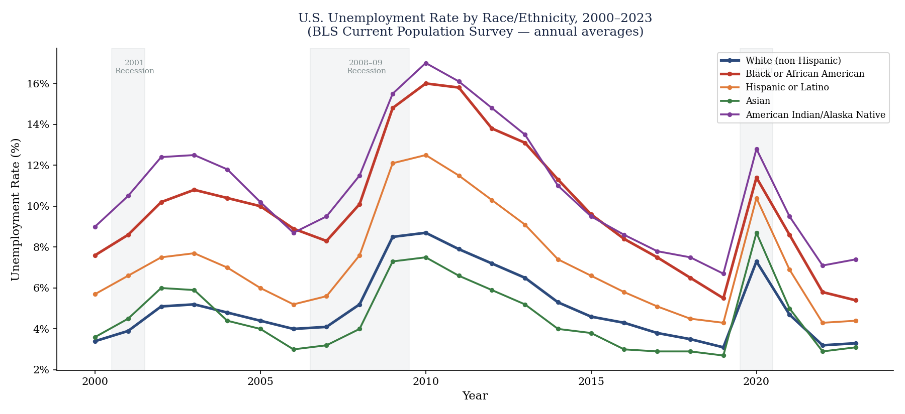
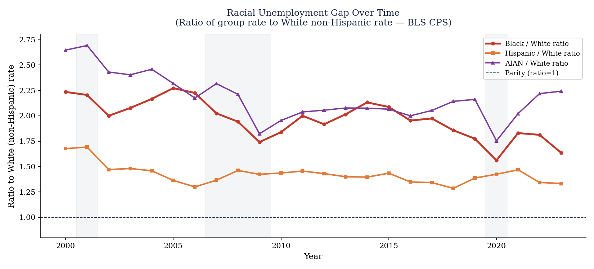
| Group | Overall | Men | Women |
|---|---|---|---|
| White (non-Hispanic) | 3.3% | 3.4% | 3.1% |
| Black or African American | 5.4% | 5.8% | 5.1% |
| Hispanic or Latino | 4.4% | 4.6% | 4.2% |
| Asian | 3.1% | 3.0% | 3.2% |
| American Indian / Alaska Native | 7.4% | 7.8% | 7.0% |
| Total | 3.6% | 3.7% | 3.4% |
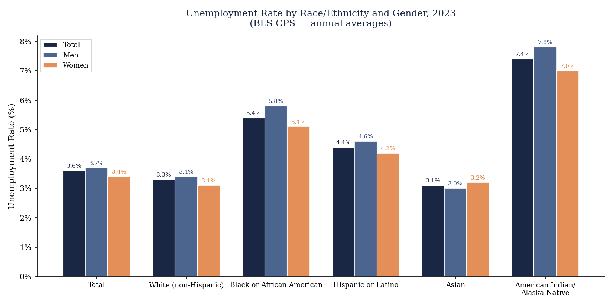
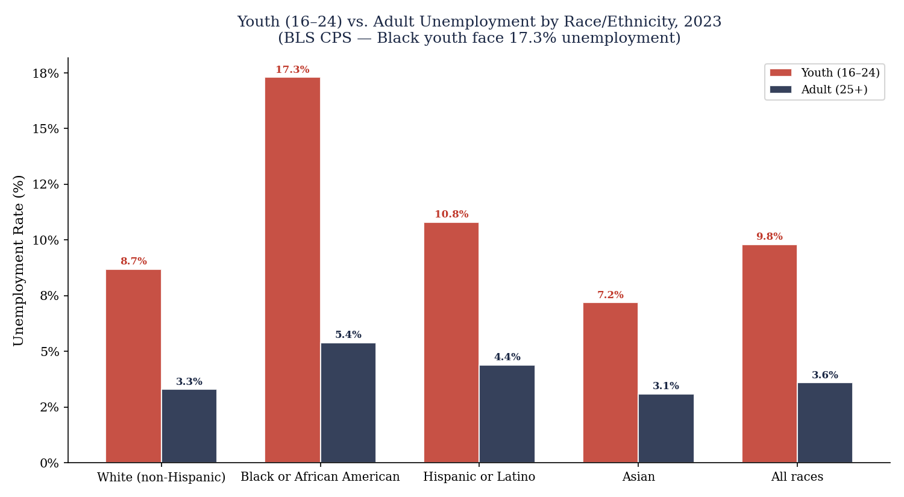
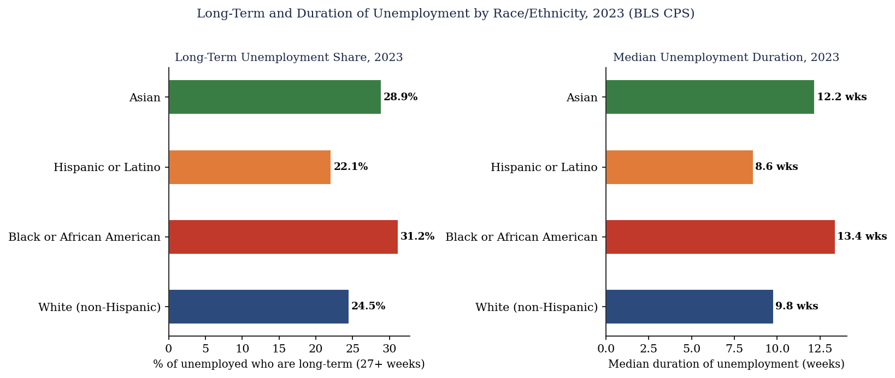
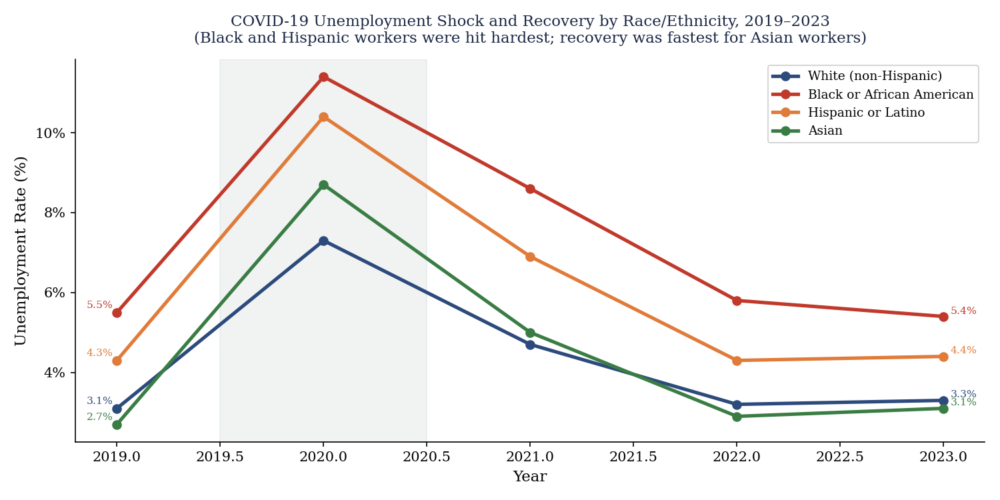
The Black-White unemployment gap has held near 2:1 through every business cycle since 2000, in both recession and recovery. American Indian/Alaska Native workers face the highest rates of any group, above 7% even in the tightest labor markets. That persistent joblessness is the single biggest driver of unequal program enrollment downstream.
SNAP is the largest means-tested benefit program in the country by enrollment, covering roughly 42 million people in a given year. When you compare who receives benefits against who makes up the general population, the gap is wide. White non-Hispanic households are 59.3% of the U.S. population but only 36.8% of SNAP recipients. Black or African American households are 13.6% of the population but 25.6% of recipients, an overrepresentation ratio of 1.88. American Indian/Alaska Native households come in at 1.85.
Fig 9 shows these ratios as bars, where anything above 1.0 means a group draws more than its population share. For Black and AIAN households the gap isn't marginal. It follows from higher poverty rates, lower median income, and higher unemployment, all of which push more households into eligibility. The takeup chart (Fig 10) adds an important wrinkle: even among households that qualify, Hispanic families have historically enrolled at lower rates than Black households. Documentation concerns, language barriers, and stigma all suppress uptake, so the enrollment numbers actually understate how much need goes unmet in Hispanic communities.
Looking at who's inside SNAP tells you more. Hispanic SNAP households average 2.9 persons, the largest household size of any group, and pull the highest average monthly benefit at $228, reflecting those bigger family units. Black SNAP households have the highest share of recipients with children (50.2%) and members with disabilities (31.2%). White SNAP households skew oldest, with the highest elderly share at 22.4%, concentrated in rural Appalachia and the Deep South. State-level data (Fig 12) puts receipt rates above 15% in Mississippi, Louisiana, New Mexico, and West Virginia.
| Group | SNAP Share | Population Share | Overrepresentation Ratio |
|---|---|---|---|
| White (non-Hispanic) | 36.8% | 59.3% | 0.62 |
| Black or African American | 25.6% | 13.6% | 1.88 |
| Hispanic or Latino | 19.1% | 18.9% | 1.01 |
| Asian / Pacific Islander | 3.1% | 6.2% | 0.50 |
| American Indian / Alaska Native | 2.4% | 1.3% | 1.85 |
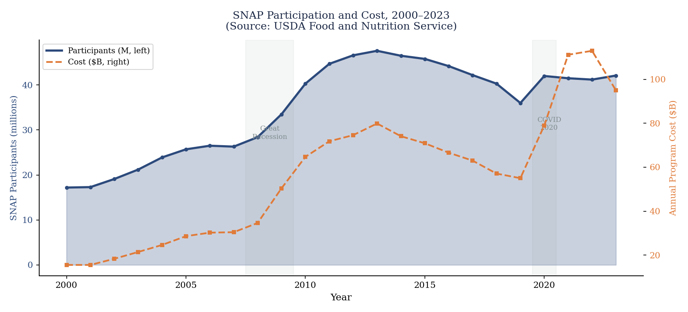
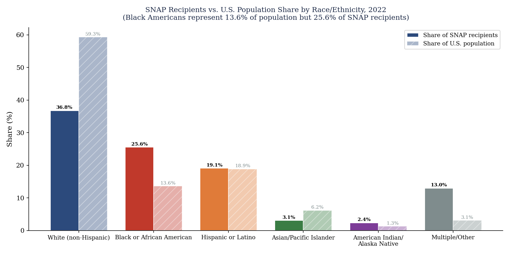
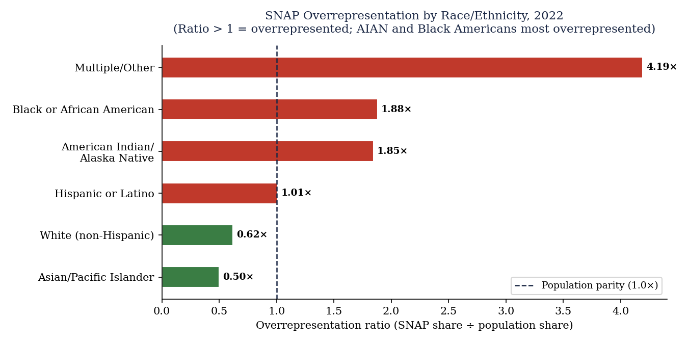
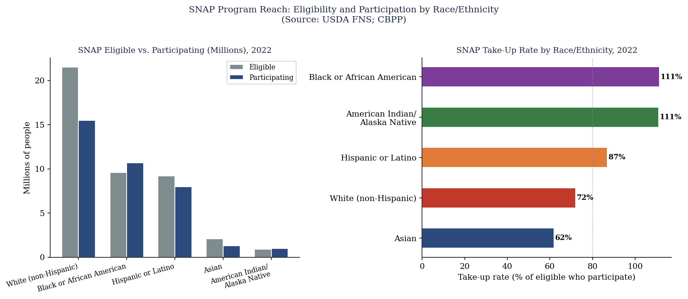
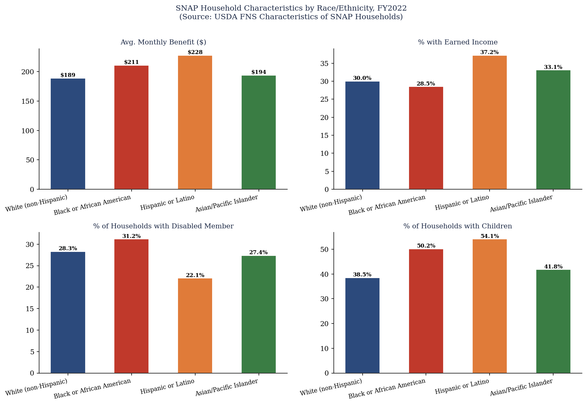
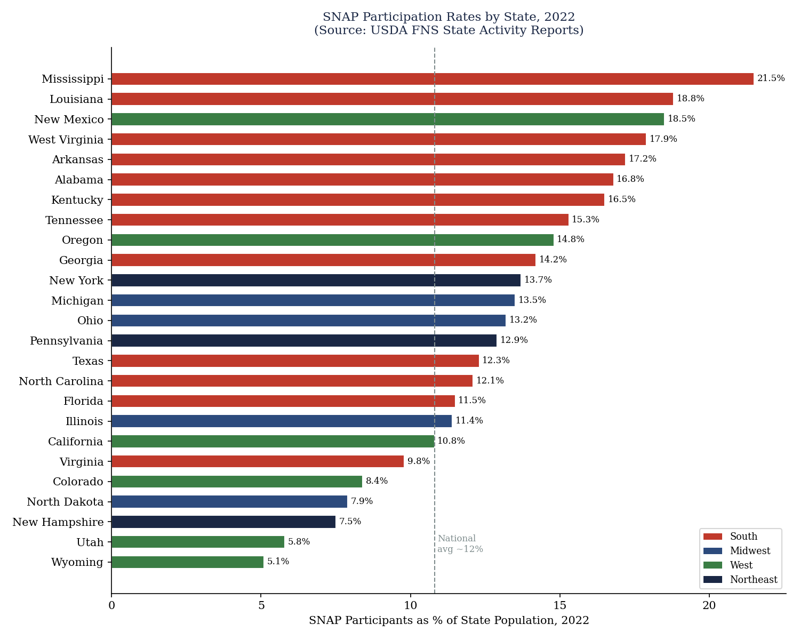
Black households enroll in SNAP at 1.88 times their population share; American Indian/Alaska Native households at 1.85 times. Hispanic families have poverty rates comparable to Black households but enroll at roughly proportional rates, pointing to real access barriers rather than lower need.
SNAP is one piece. The safety net also includes unemployment insurance, Medicaid, TANF, SSI, and federal housing assistance. Across all of them, the same direction holds: Black and AIAN households are overrepresented in every program. The sharpest gaps appear in the programs built as temporary income bridges. Medicaid, the broadest program, has smaller ratios but still shows meaningful skew.
Unemployment insurance is the counterintuitive case. Black workers face higher unemployment rates but have a lower UI recipiency rate (22.4%) than white workers (29.5%). The weekly replacement rate is also lower for Black workers (38.5%) than white (44.2%). Part of this is mechanical: UI benefits are calculated from prior wages, so the existing wage gap shrinks the payout. Part of it is structural. More Black workers hold jobs with irregular hours, short tenure, or contractor arrangements that don't qualify for UI at all. American Indian/Alaska Native workers have the lowest recipiency rate (19.8%) and the lowest average weekly benefit ($298) of any tracked group.
Medicaid overrepresentation for Black households runs at 1.38 times and for Hispanic households at 1.50 times, largely because lower-wage jobs less often come with employer health coverage. TANF shows the sharpest concentration. Black families are 13.6% of the population and 37.7% of the TANF caseload, a ratio of 2.77. Federal housing assistance is starker still: Black households hold 44.8% of housing vouchers and public housing slots against a 13.6% population share, a ratio of 3.29.
Aggregating across programs, government transfers to Black households average $9,180 per year, which works out to 18.8% of median household income. For white non-Hispanic households that figure is $5,420, or 7.2% of median income. Asian households, with a median income of $104,780, receive an average of $3,850 in transfers, just 3.7% of their income. The stacked chart (Fig 15) breaks this down by program: Medicaid and housing make up the bulk for Black and AIAN households, while UI and Social Security retirement dominate for white households.
Where $T_{ip}$ is mean annual transfer income from program $p$ for racial group $i$. Programs $p$ include UI, SNAP, TANF, SSI, Medicaid (imputed), and housing assistance.
| Group | Mean Transfer Income | Median HH Income | Transfers as % of Income |
|---|---|---|---|
| White (non-Hispanic) | $5,420 | $74,990 | 7.2% |
| Black or African American | $9,180 | $48,710 | 18.8% |
| Hispanic or Latino | $7,340 | $57,980 | 12.7% |
| Asian | $3,850 | $104,780 | 3.7% |
| American Indian / Alaska Native | $8,920 | $48,710 | 18.3% |
| All races | $6,250 | $74,580 | 8.4% |
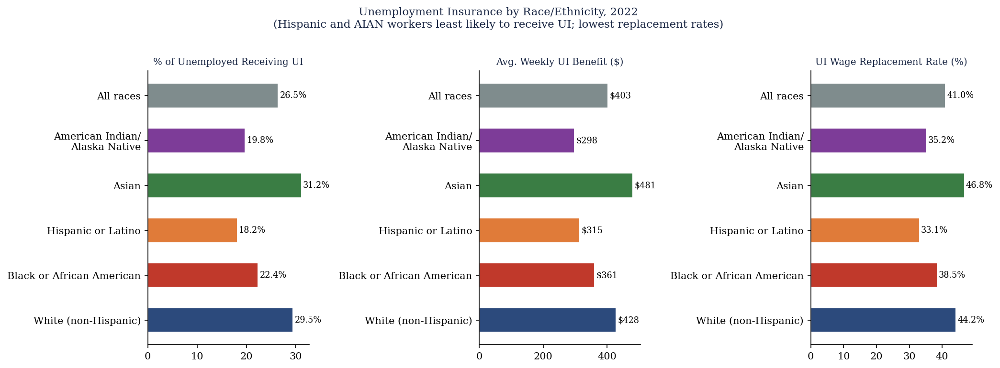
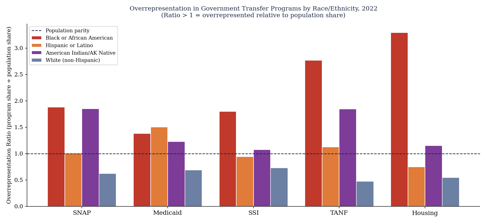
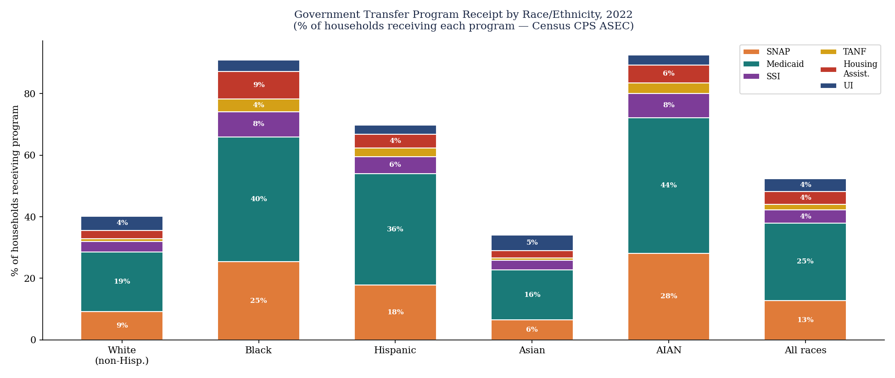
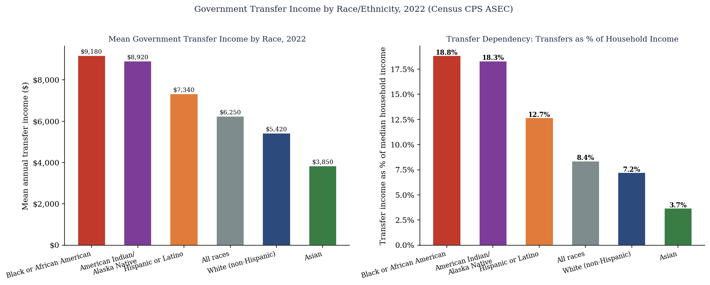
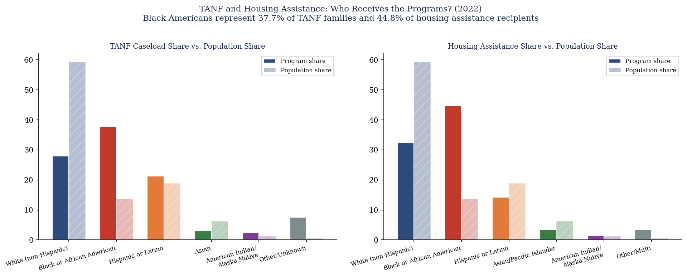
| Group | Medicaid Overrep. | TANF Overrep. | Housing Overrep. | UI Recipiency Rate |
|---|---|---|---|---|
| White (non-Hispanic) | 0.69 | 0.47 | 0.55 | 29.5% |
| Black or African American | 1.38 | 2.77 | 3.29 | 22.4% |
| Hispanic or Latino | 1.50 | 1.13 | 0.75 | 18.2% |
| Asian / Pacific Islander | 0.77 | 0.48 | 0.56 | 31.2% |
| American Indian / Alaska Native | 1.23 | 1.85 | 1.15 | 19.8% |
The highest overrepresentation ratio in this analysis is Black households in federal housing assistance at 3.29 times their population share. The lowest is Black workers' UI recipiency rate, which falls below the white rate despite higher unemployment. The wage-linked benefit formula turns an existing income gap into an access gap.
Pulling the program-level data into a composite index across five dimensions, unemployment rate, SNAP enrollment share, Medicaid enrollment share, transfer income as a percent of household income, and share of households receiving any transfer, produces a ranking that puts American Indian/Alaska Native households near the top at 98.7, Black households at 85.6, Hispanic at 55.4, white at 17.2, and Asian at 0 as the reference minimum. The radar chart (Fig 19) shows this isn't driven by one outlier dimension. Both AIAN and Black households score high across all five components.
The structural data explains a lot. Black households have a median wealth of $44,900, against $285,000 for white households, 15.8 cents on the dollar. Hispanic households have $61,600, about 21.6 cents. Wealth functions as a buffer. Households with savings can ride out a job loss without enrolling in SNAP, cover a medical bill without Medicaid, and absorb a rent increase without a housing voucher. When that buffer is near zero, any income shock becomes a program enrollment. Asian households, with median wealth above $320,000, score lowest on every dependency measure.
Education and occupation run the same direction. Among adults 25 and older, 56.9% of Asian Americans have a college degree. The figure is 35.5% for white adults, 26.3% for Black, 18.7% for Hispanic, and 15.9% for AIAN. Professional and managerial occupation rates follow: 52.4% for Asian, 42.3% for white, 31.1% for Black, 23.8% for Hispanic, and 25.6% for AIAN. Poverty rates for Black and Hispanic households both sit at 17.1%, exactly double the white rate of 8.6%.
Fig 23 traces the policy decisions behind these numbers. When Congress passed the Social Security Act in 1935 and the National Labor Relations Act in the same year, agricultural and domestic workers were explicitly excluded. Those were occupations filled disproportionately by Black and Hispanic workers, and the exclusion denied decades of pension accumulation and union-backed wage gains. FHA mortgage underwriting from 1934 to 1968 graded Black neighborhoods as high-risk and blocked access to the federally backed mortgages that built white middle-class wealth after World War II. The War on Poverty expanded programs in the 1960s, but the 1996 welfare reform then imposed time limits and work requirements that cut off the cash floor for the poorest households. These weren't side effects. They were the mechanism. The safety net disparities today are the accumulated result.
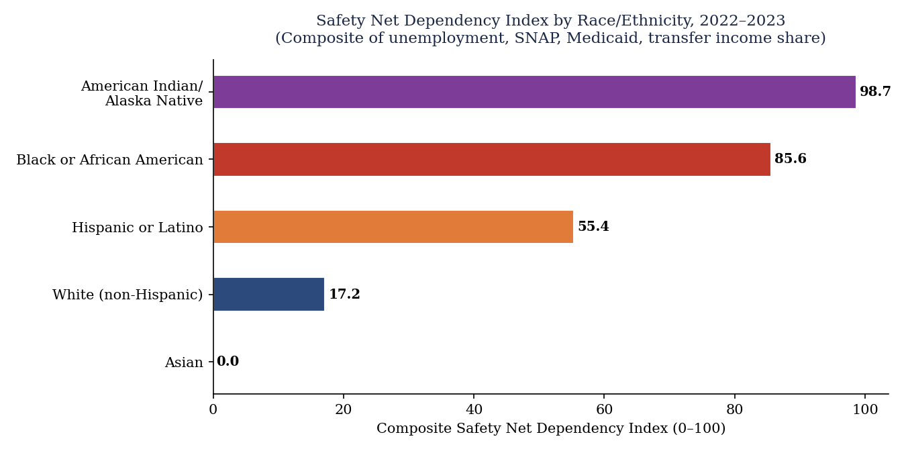
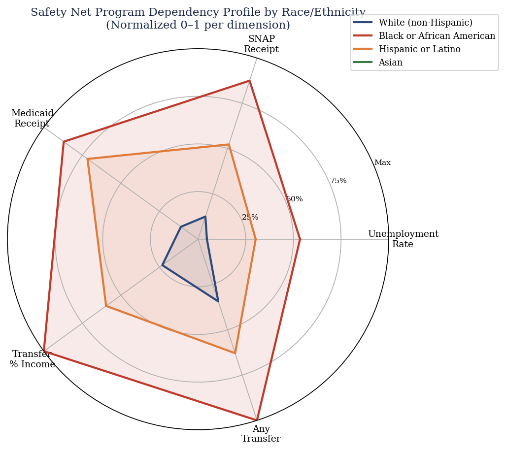
| Group | Median HH Income | Poverty Rate | % College Degree | % Professional Occ. | Homeownership Rate | Gini (Within-Group) |
|---|---|---|---|---|---|---|
| White (non-Hispanic) | $75,000 | 8.6% | 35.5% | 42.3% | 72.5% | 0.458 |
| Black or African American | $48,700 | 17.1% | 26.3% | 31.1% | 44.0% | 0.488 |
| Hispanic or Latino | $58,000 | 17.1% | 18.7% | 23.8% | 47.5% | 0.471 |
| Asian | $104,800 | 9.7% | 56.9% | 52.4% | 60.9% | 0.441 |
| American Indian / Alaska Native | $48,700 | 24.3% | 15.9% | 25.6% | 51.7% | 0.497 |
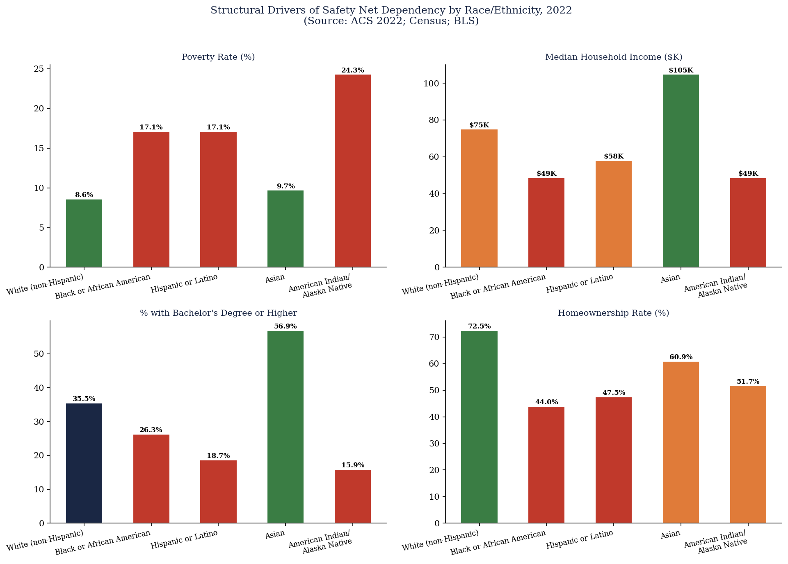
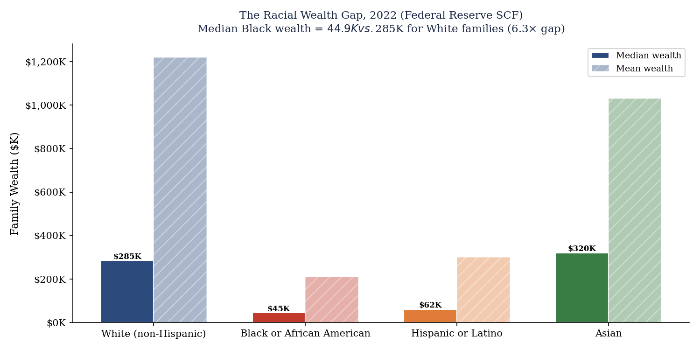
| Group | Median Wealth | Mean Wealth | Wealth Gap Ratio (vs. White) |
|---|---|---|---|
| White (non-Hispanic) | $285,000 | $1,220,000 | 1.00 |
| Black or African American | $44,900 | $212,000 | 0.158 |
| Hispanic or Latino | $61,600 | $302,000 | 0.216 |
| Asian | $320,200 | $1,030,000 | 1.124 |
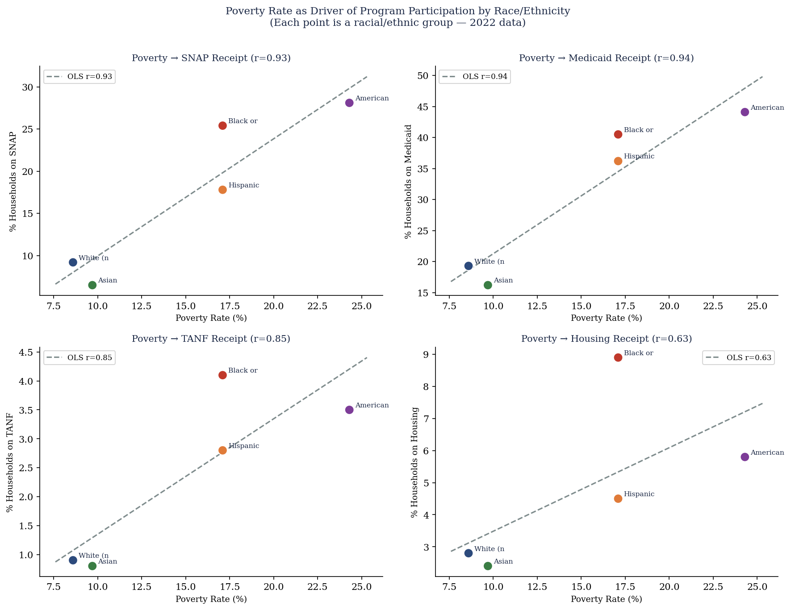
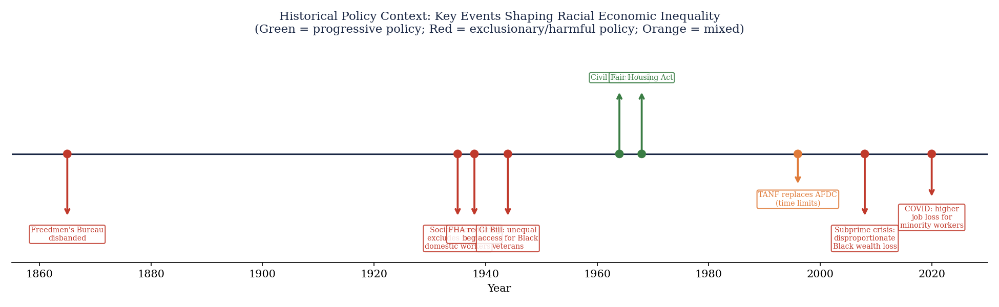
Black households hold 15.8 cents in median wealth for every dollar held by white households. American Indian/Alaska Native households have both the highest poverty rate of any group (24.3%) and the highest within-group Gini (0.497), deep average deprivation combined with extreme internal inequality. The safety net doesn't create these gaps. It reflects them.
Unemployment data come from the BLS Current Population Survey (CPS), monthly seasonally adjusted series, 2000–2023. Racial/ethnic categories follow BLS classifications. The Black–White ratio is computed as the ratio of seasonally adjusted monthly rates.
SNAP data come from USDA Food and Nutrition Service administrative records and Census Bureau CPS ASEC microdata. Population shares use Census Bureau national estimates. Overrepresentation ratios are computed as (program share) ÷ (population share). Takeup rates are CBPP estimates based on eligible population modeling against CPS ASEC responses.
Transfer program data (UI, Medicaid, TANF, SSI, housing) come from HHS/ACF annual caseload reports, Social Security Administration (SSI enrollment), and HUD annual public housing and voucher reports. All program enrollment shares are matched to CPS ASEC population denominators for comparability.
Transfer income figures come from Census Bureau CPS ASEC variable-level extracts, which separate earned income, Social Security retirement, SSI, TANF, SNAP (imputed value), housing subsidy (imputed), and UI. Mean transfer income excludes Social Security retirement (not means-tested) to isolate safety net programs.
Structural drivers (income, poverty, education, occupation, homeownership, Gini) come from Census Bureau American Community Survey 5-year estimates (2022 ACS). Wealth data come from the Federal Reserve Survey of Consumer Finances (2022 wave), which oversamples high-wealth households and is the gold standard for wealth measurement.
Composite dependency index components are min-max normalized across the five racial/ethnic groups (Asian as min, AIAN as max for most components), then averaged equally. This is a descriptive ranking tool, not an absolute measure.
Limitations: The "American Indian/Alaska Native" category has small CPS sample sizes that reduce precision. Hispanic takeup rates are likely understated because undocumented households are excluded from the eligible population estimates. The composite index weights all five components equally, which is a judgment call; different weights could reorder the middle groups. Historical exclusion analysis is descriptive rather than causal. It is not possible to isolate the counterfactual effect of any single policy in an observational design like this one.